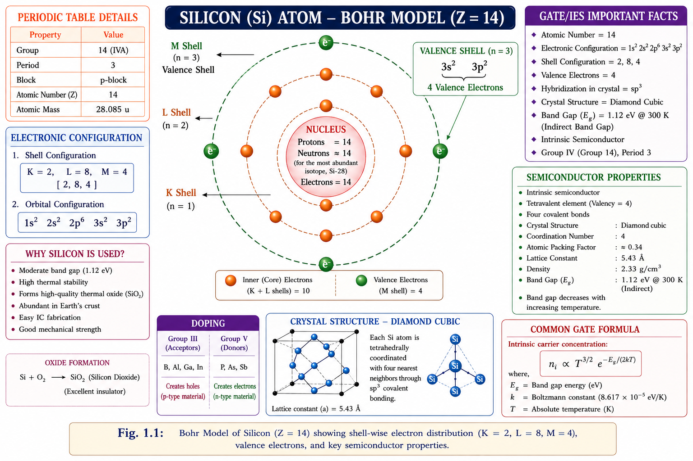
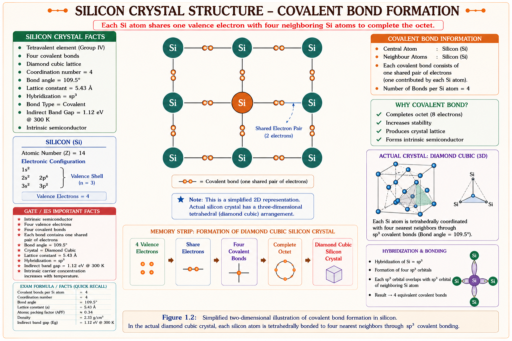
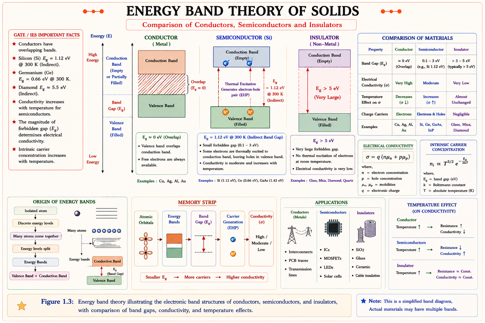
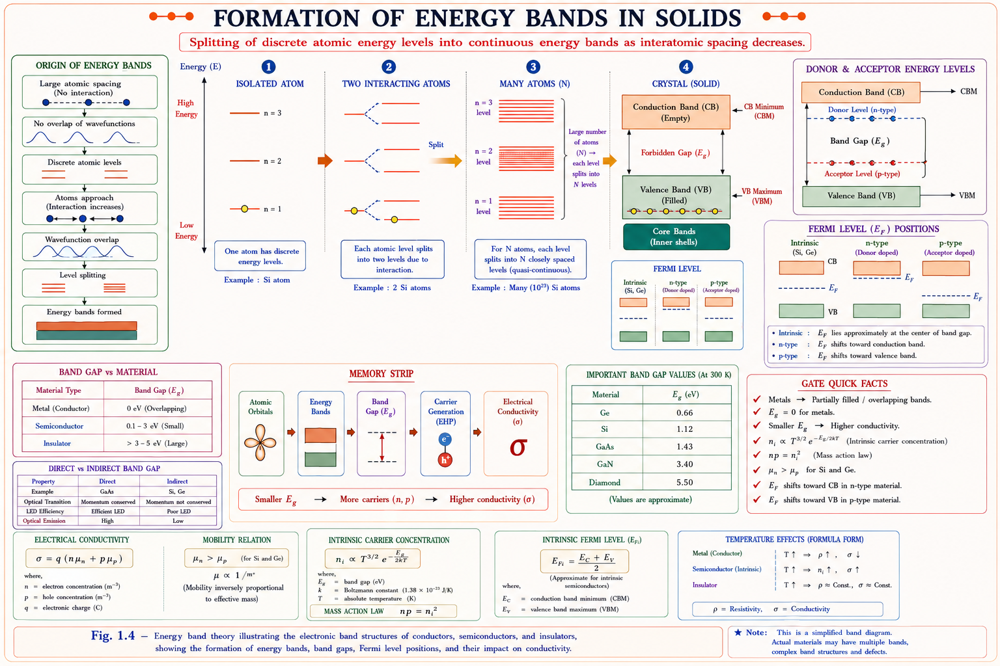
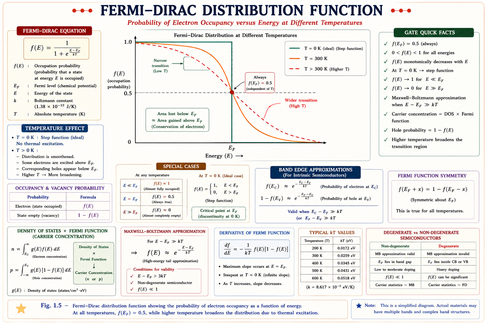
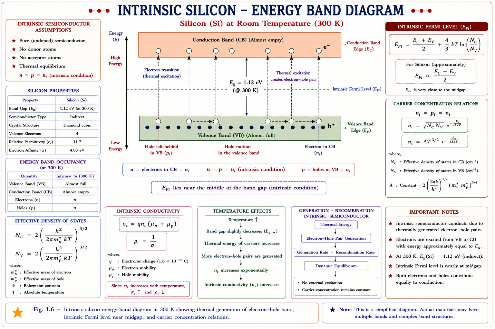

From atomic structure to energy band theory — the bedrock of every semiconductor device. Understand why silicon conducts just enough, how electrons jump bands, and where the Fermi level truly sits. Built for GATE ECE/EE, IES, and PSU aspirants.
We needed materials that could be switched between conducting and non-conducting states by external signals — voltage, light, or temperature. Neither pure conductors nor pure insulators could do this. Semiconductors gave engineers a programmable middle ground.
Consider the task of building a switch that can turn on and off billions of times per second, consumes almost no power in the off state, and fits 50 billion copies onto a chip the size of a thumbnail. Copper and glass cannot do this — only a material whose electrical conductivity can be precisely engineered at the atomic level can. That material is a semiconductor.
Semiconductors connect almost every subject in electrical engineering. Diodes, BJTs, MOSFETs, op-amps, solar cells, LEDs, power converters, ADCs — all trace their behaviour back to the band theory and carrier physics you will study here. GATE and IES questions on semiconductor devices always probe whether you understand the why beneath the formula.
Band theory → diode equation → BJT current equations → MOSFET threshold voltage → op-amp slew rate. This chapter is the root of the entire tree.
Silicon (Si, atomic number 14) has the electron configuration 1s² 2s² 2p⁶ 3s² 3p². The outermost shell (n = 3) carries four valence electrons. Germanium (Ge, atomic number 32) has the same four-valence-electron structure at n = 4. This quartet is the reason both elements are semiconductors — four bonds create a perfectly balanced crystal that is neither too eager to conduct nor too reluctant.[1]

Figure 2.1 — Silicon atom: 3 electron shells, 4 valence electrons in outermost shell (n = 3)
In solid silicon, each atom shares its four valence electrons with four neighbouring atoms, forming four covalent bonds. Every electron is paired — the crystal achieves an octet configuration identical to a noble gas. This sharing creates a diamond cubic lattice — one of the strongest and most ordered arrangements in nature.[1,2]
Think of it like a group project where each student (atom) contributes one idea (electron) to four different teams. Every team has exactly two ideas — no team is short, none has a surplus. At absolute zero (0 K), all electrons are perfectly paired and no current can flow. The crystal is a perfect insulator at 0 K.

Figure 2.2 — 2D representation of silicon crystal lattice. Each Si atom shares one electron with each of four neighbours, forming 4 covalent bonds. At 0 K all bonds are intact.
Concept: Boylestad & Nashelsky, Electronic Devices and Circuit Theory, Ch. 1 [1]
Many students believe silicon atoms in a crystal share electrons in pairs with just one neighbour. In reality, each Si atom forms four separate covalent bonds, one with each of its four nearest neighbours in the diamond cubic lattice.
The most intuitive way to understand this classification is through the energy gap \(E_g\) — the energy difference between the top of the valence band and the bottom of the conduction band. Think of this gap as a fence. Electrons must jump this fence to conduct electricity. How high the fence is determines the material's classification.[2,3]

Figure 3.1 — Energy band diagram comparison. The forbidden gap width determines material type. Silicon (1.12 eV) has a gap thermal energy can partially bridge at room temperature.
Based on: Streetman & Banerjee, Solid State Electronic Devices, 6th ed. [2]; Neamen, Semiconductor Physics and Devices, 4th ed. [3]
| Material | Band Gap (eV) | Conductivity (S/m) | Example | GATE Relevance |
|---|---|---|---|---|
| Conductor | ≈ 0 (overlap) | 10⁶ – 10⁸ | Cu, Ag, Al | Resistance calculation |
| Semiconductor (Si) | 1.12 eV @ 300 K | ~10⁻⁴ – 10³ | Silicon | All device problems |
| Semiconductor (Ge) | 0.67 eV @ 300 K | ~10⁻² – 10³ | Germanium | Threshold voltage, leakage |
| Semiconductor (GaAs) | 1.43 eV @ 300 K | ~10⁻⁴ | GaAs | High-speed / optoelectronics |
| Insulator | > 5 eV | 10⁻¹⁰ – 10⁻²⁰ | SiO₂, Glass | Gate oxide, MOSFET |
The 1.12 eV band gap of silicon corresponds exactly to photons of wavelength ~1107 nm (near-infrared). This is why silicon solar cells absorb sunlight efficiently but are transparent to longer infrared wavelengths. GaAs's 1.43 eV gap (868 nm, visible red) makes it ideal for LEDs and laser diodes.
A single, isolated hydrogen atom has perfectly discrete energy levels: –13.6 eV, –3.4 eV, –1.5 eV… Bring two hydrogen atoms close together and quantum mechanics demands that no two electrons can occupy identical quantum states (Pauli Exclusion Principle). The single energy level must split into two slightly different levels. Bring \(N = 10^{23}\) atoms together (a crystal) and each level splits into \(10^{23}\) closely spaced sub-levels. These sub-levels are so densely packed they form a continuous energy band.[2,3]

Figure 4.1 — Band formation: 1 atom (discrete lines) → 2 atoms (split) → N atoms (quasi-continuous band) → crystal (Conduction Band, Valence Band, Forbidden Gap)
The Valence Band (VB) is the highest energy band that is completely (or substantially) filled with electrons at 0 K. These electrons are bound to parent atoms; they do not conduct electricity freely. The Conduction Band (CB) is the next band above the valence band. Electrons in the conduction band are effectively free — they can move through the crystal under an electric field. The Forbidden Energy Gap \(E_g\) separates the two bands; no electron can exist at an energy within this gap.[1,2,3]
Band gap decreases as temperature rises. As the lattice vibrates more, the periodic potential weakens. For silicon: \(E_g(T) \approx 1.17 - \frac{4.73 \times 10^{-4} T^2}{T + 636}\) eV. This is why Ge-based devices have more leakage at room temperature than Si.
Imagine filling a building with workers. You fill floors from the bottom. The Fermi level \(E_F\) is the energy of the topmost occupied floor at absolute zero — the highest energy state that has a 50% probability of being occupied at any temperature above 0 K. More precisely, the Fermi–Dirac distribution \(f(E)\) gives the probability that a state at energy \(E\) is occupied by an electron at thermal equilibrium.[3,4]
where: \(E_F\) = Fermi energy (eV), \(k\) = Boltzmann's constant (8.617 × 10⁻⁵ eV/K), \(T\) = absolute temperature (K)
Key property: When \(E = E_F\), we get \(f(E_F) = \frac{1}{1+e^0} = \frac{1}{2} = 50\%\) — always, at any temperature. This is the defining characteristic of the Fermi level.

Figure 5.1 — Fermi–Dirac distribution at different temperatures. The 50% probability point always occurs at E = E_F regardless of temperature. Higher temperature smears the distribution.
For a perfectly pure (intrinsic) semiconductor, the number of electrons in the conduction band must exactly equal the number of holes in the valence band — charge neutrality demands it. The Fermi level therefore sits very close to the middle of the forbidden gap. More precisely, using the density of states:[3,4]
\(E_C\) = bottom of conduction band, \(E_V\) = top of valence band, \(m_p^*, m_n^*\) = effective masses of holes and electrons. For Si, \(m_p^* > m_n^*\), so \(E_{Fi}\) is slightly above the exact midgap.
Students write \(E_{Fi} = (E_C + E_V)/2\) (exactly midgap) and lose marks. This is only strictly true if \(m_p^* = m_n^*\). In silicon, \(m_p^*/m_n^* \approx 1.9\), so \(E_{Fi}\) is about 0.012 eV above the exact midgap — a small but non-zero correction that appears in IES questions.
In free space, an electron of mass \(m_0 = 9.11 \times 10^{-31}\) kg responds to an external force \(F\) with acceleration \(a = F/m_0\). Inside a crystal, the electron also experiences forces from the periodic lattice potential. The net effect is that the electron behaves as if it had a different mass — the effective mass \(m^*\). This is not a real change in the electron's mass; it is a quantum-mechanical accounting trick that lets us use classical mechanics \(F = m^*a\) without worrying about every lattice interaction.[3,4]
\(\hbar\) = reduced Planck constant, \(k\) = wave vector, \(d^2E/dk^2\) = curvature of the E–k dispersion relation. Greater curvature → smaller effective mass → more mobile carrier.
The hole — the absence of an electron in the valence band — has a positive effective mass. Its effective mass is defined by the curvature at the top of the valence band. A valence band maximum has negative curvature (\(d^2E/dk^2 < 0\)) for electrons, but a hole sitting there is assigned \(m_h^*=-m_e^*\) — a positive quantity. This is why holes accelerate in the same direction as the electric field (unlike electrons).
| Parameter | Silicon (Si) | Germanium (Ge) | GaAs |
|---|---|---|---|
| m*ₙ (electrons) | 0.26 m₀ | 0.12 m₀ | 0.067 m₀ |
| m*ₚ (holes) | 0.49 m₀ | 0.28 m₀ | 0.48 m₀ |
| Electron mobility μₙ | 1350 cm²/V·s | 3900 cm²/V·s | 8500 cm²/V·s |
| Hole mobility μₚ | 480 cm²/V·s | 1900 cm²/V·s | 400 cm²/V·s |
| Band Gap Eg (300 K) | 1.12 eV | 0.67 eV | 1.43 eV |
Source: Neamen [3]; Streetman & Banerjee [2]
GaAs electrons have effective mass only 0.067 m₀ — nearly 4× lighter than Si electrons (0.26 m₀). Lighter effective mass → higher acceleration for the same field → higher electron mobility (8500 vs 1350 cm²/V·s). This is why GaAs is preferred for RF amplifiers and 5G front-end circuits.
An intrinsic semiconductor is a perfectly pure, defect-free semiconductor crystal with no intentional dopant impurities. At 0 K it is a perfect insulator. As temperature rises, thermal energy breaks covalent bonds — each broken bond releases one free electron into the conduction band and leaves one hole in the valence band. Electron–hole pairs are always created in pairs, so \(n = p = n_i\), where \(n_i\) is the intrinsic carrier concentration.[1,2,3]
where \(N_C = 2\!\left(\frac{2\pi m_n^* kT}{h^2}\right)^{3/2}\) is the effective density of states in the conduction band, and \(N_V\) similarly for the valence band.

Figure 7.1 — Intrinsic silicon at room temperature. Thermal energy creates electron–hole pairs. Intrinsic Fermi level E_Fi sits near the middle of the gap.
At thermal equilibrium: \(\quad n \cdot p = n_i^2 \quad\) This holds true whether the semiconductor is pure or doped. Doping increases one carrier type and decreases the other, but their product stays constant at \(n_i^2\) for a given temperature. This is the semiconductor analogue of the water dissociation constant \([H^+][OH^-] = K_w\).
Temperature is the most important external variable in semiconductor behaviour. Unlike metals (where conductivity decreases with temperature), intrinsic semiconductor conductivity increases with temperature — because more electron–hole pairs are generated.[1,2]
| Effect | As Temperature Increases | Reason | GATE/IES Significance |
|---|---|---|---|
| ni (intrinsic carriers) | Increases exponentially | More e⁻–h pairs generated; \(n_i \propto T^{3/2} e^{-Eg/2kT}\) | 🟢 High probability |
| Eg (band gap) | Decreases slightly | Lattice expands; periodic potential weakens | 🟢 High probability |
| Mobility (μ) | Decreases | Increased lattice scattering; \(\mu \propto T^{-3/2}\) for lattice scattering | 🟡 Medium probability |
| Conductivity (σ) | Increases (intrinsic) | ni increase dominates over mobility decrease | 🟢 High probability |
| Fermi level (EFi) | Shifts slightly | Temperature term in EFi formula; moves toward CB if m*p > m*n | 🟡 Medium probability |
| Resistivity | Decreases (intrinsic) | ρ = 1/σ, opposite to metals — semiconductor NTC behaviour | 🟢 High probability |
The negative temperature coefficient (NTC) of semiconductor resistivity is exploited in NTC thermistors used in digital thermometers, medical devices, and automotive temperature sensors. The sharply exponential variation of \(n_i\) with temperature allows very sensitive temperature measurement over a wide range.
Given: \(E - E_F = 0.30\) eV, \(T = 300\) K, \(kT = 0.02585\) eV
Interpretation: There is approximately a 9.1 × 10⁻⁶ (or 0.00091%) probability that the state at E_C is occupied. This confirms the conduction band is largely empty — consistent with a semiconductor at room temperature.
When \(E - E_F \gg kT\) (more than 3kT above Fermi level), you can use the Boltzmann approximation: \(f(E) \approx e^{-(E-E_F)/kT}\). This simplifies calculations enormously.
The ratio is simply: \(\dfrac{n_i(\text{Ge})}{n_i(\text{Si})} = \dfrac{2.4 \times 10^{13}}{1.5 \times 10^{10}} \approx 1600\)
The fundamental reason lies in the exponential term: \(n_i \propto e^{-E_g/2kT}\). Taking ratios:
The calculated ratio (~6000) is higher than the actual ratio (~1600) because we ignored the prefactor difference \(\sqrt{N_C N_V}\) which is not identical for Si and Ge. The exponential dominates the trend — smaller Eg → dramatically higher n_i.
The probability of finding an electron at the Fermi level in a semiconductor at any temperature T > 0 K is:
Explanation: By definition of the Fermi level, \(f(E_F) = 1/(1 + e^0) = 1/2 = 0.5\) at any T > 0 K. This is temperature-independent and is the defining property of \(E_F\).
At absolute zero temperature (0 K), a semiconductor behaves as:
Explanation: At 0 K all covalent bonds are intact, both bands are either completely full or completely empty, and no thermal energy is available to excite electrons across the gap. The semiconductor has zero conductivity — it is a perfect insulator.
🟢 HIGH Fermi-Dirac function: \(f(E) = 1/(1 + e^{(E-E_F)/kT})\). Know the shape, know that \(f(E_F) = 0.5\).
🟢 HIGH Intrinsic condition: \(n = p = n_i\), and \(n \cdot p = n_i^2\) (mass action law) always at thermal equilibrium.
🟢 HIGH ni values: \(n_i(\text{Si}) = 1.5 \times 10^{10}\) cm⁻³; \(n_i(\text{Ge}) = 2.4 \times 10^{13}\) cm⁻³ at 300 K.
🟢 HIGH Band gaps: Si = 1.12 eV, Ge = 0.67 eV, GaAs = 1.43 eV at 300 K.
🟡 MED Effective mass: \(m^* = \hbar^2 (d^2E/dk^2)^{-1}\). Smaller m* → higher mobility.
🟡 MED EFi position: Slightly above midgap in Si because \(m_p^* > m_n^*\).
🔴 LOW Exact ni formula: Full derivation with NC, NV rarely asked in numerical form.
Si = 1.12 eV, Ge = 0.67 eV, GaAs = 1.43 eV
Mnemonic: "Slim Guys Always" → Si = 1.1, Ge = 0.67,
As (GaAs) = 1.43
Or remember: Ge is the smallest (smallest fence to jump), GaAs is the tallest (fastest device),
Si is in the middle (the universal choice).
The Fermi level is the energy where occupancy is always exactly 50%, regardless of temperature. "At the level, it's always half." This follows directly from \(f(E_F) = 1/(1+e^0) = 0.5\).
Metal: Resistance Rises (RR) — as T↑, lattice scattering ↑, resistance ↑.
Semiconductor: Resistance Falls (RF) — as T↑, ni ↑ exponentially, more
carriers, conductivity ↑, resistance ↓.
Story: Semiconductors are cold-blooded — the hotter they get, the more energetic (conductive)
they become.
Si: \( 1.12 \text{ eV} \) · Ge: \( 0.67 \text{ eV} \) · GaAs: \( 1.43 \text{ eV} \) · Insulator: \( >5 \text{ eV} \) · Conductor: \( \approx 0 \text{ eV} \)
Si: \( 1.5 \times 10^{10} \text{ cm}^{-3} \) · Ge: \( 2.4 \times 10^{13} \text{ cm}^{-3} \) · GaAs: \( 1.8 \times 10^{6} \text{ cm}^{-3} \). Mass action: \( n \cdot p = n_i^2 \)
\( f(E) = \frac{1}{1 + e^{(E-E_F)/kT}} \) · \( f(E_F) = 0.5 \) always · \( kT = 0.026 \text{ eV} \) at 300 K
\( m_n^* = 0.26 m_0 \) · \( m_p^* = 0.49 m_0 \) · \( m_n^* < m_p^* \rightarrow \) electrons more mobile · \( \mu_n > \mu_p \)
\( E_g \downarrow \) as \( T \uparrow \) · \( n_i \uparrow \) exponentially · \( \mu \downarrow \) (lattice scattering) · \( \sigma \uparrow \) (\( n_i \) dominates) · NTC behaviour
\( E_{Fi} \approx \frac{E_C+E_V}{2} + \frac{3}{4}kT \ln\left(\frac{m_p^*}{m_n^*}\right) \). In Si: slightly above midgap. In Ge: similarly above midgap.
Type your question below or click a suggested topic. The tutor will answer using Boylestad, Streetman, and Neamen as references.
Extrinsic Semiconductors — n-type and p-type doping, donor and acceptor levels, shift of Fermi level with doping concentration, degenerate semiconductors, compensation doping, and complete GATE & IES numerical problems.
All technical content is derived from the following standard textbooks. All explanations, derivations, and diagrams are original to Aarova AI.